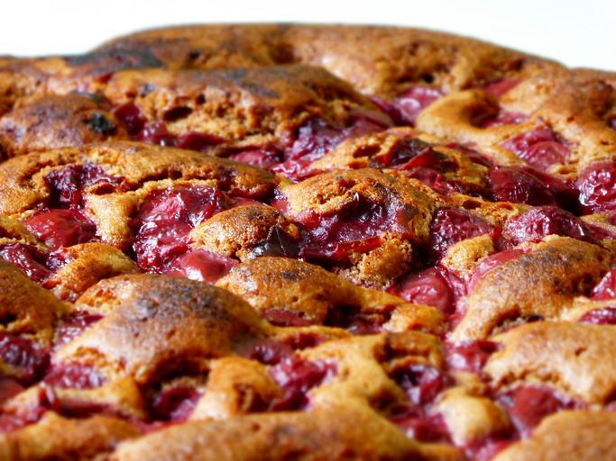

Home
Cherry Pie Recipe

Description
homemade cherry pie is perfectly sliceable with a thick almond-hinted cherry pie filling and a golden brown buttery flaky pie crust.
As always, wait for the pie to cool completely before slicing, which is a non-negotiable that helps avoid a soupy pie filling
Ingredients
- Homemade Pie Crust or All Butter Pie Crust (both recipes make 2 crusts, 1 for bottom and 1 for top)
- 4 and 1/2 cups halved & quartered pitted fresh cherries
- 2/3 cup (135g) granulated sugar
- 1/4 cup (28g) cornstarch
- 1 Tablespoon (15ml) lemon juice
- 1 teaspoon pure vanilla extract
- 1/4 teaspoon almond extract
- 1 Tablespoon (14g) cold unsalted butter, cut into small cubes
- egg wash: 1 large egg beaten with 1 Tablespoon (15ml) milk
- optional: coarse sugar for sprinkling on crust
Steps
- Prepare either pie crust recipe through step 5. The pie dough needs to chill in the refrigerator for at least 2 hours before using.
- In a large bowl, stir the cherries, sugar, cornstarch, lemon juice, vanilla, and almond extract together until thoroughly combined.
Cover the filling and place in the refrigerator as you roll out the pie dough (or for up to 24 hours).
- On a floured work surface, roll out one of the discs of chilled dough (keep the other one in the refrigerator).
Turn the dough about a quarter turn after every few rolls until you have a circle 12 inches in diameter.
Carefully place the dough into a 9-inch pie dish. Tuck it in with your fingers, making sure it is smooth.
Use a slotted spoon to transfer the cherries into the crust. Reserve the juice in the bowl for the next step.
Refrigerate pie, uncovered, as you reduce the juice in the next step.
- Pour the leftover juice into a small saucepan. Cook over low heat, stirring, until juice has slightly reduced and thickened, about 3–4 minutes.
Cool for 5 minutes, then pour over cherries in filling. Do your best to gently toss together—doesn’t have to be perfect.
The reduction will harden and thicken as a result of mixing with the cold cherries—this is normal. Dot the pieces of cold butter on top of the filling.
Place the pie in the refrigerator while you roll out the top crust.
- Remove the other disc of pie dough from the refrigerator. Roll the dough into a circle 12 inches in diameter. Using a pastry wheel, sharp knife, or pizza cutter,
cut the dough into strips—for the pictured pie, I cut four strips 2 inches wide and four strips 1 inch wide. Carefully thread the strips over and under one another,
pulling back strips as necessary to weave.
- Using a pastry brush, lightly brush the top and edges of the pie crust with egg wash. Sprinkle the top with coarse sugar, if using.
place the pie in the refrigerator for 20–30 minutes while your oven preheats.
- Preheat oven to 400°F (204°C).
- Place the pie onto a large baking sheet and bake for 20 minutes. Keeping the pie in the oven, reduce the temperature to 375°F (190°C) and bake for an additional 30–40
minutes or until the top crust is golden brown and the filling juices have been bubbling up around the edges or through the lattice/vents for at least 5 minutes.
*After the first 20 minutes of bake time, I recommend placing a pie crust shield on the crust’s edges to prevent it from over-browning too quickly.*
- Remove pie from the oven, place on a cooling rack, and cool for at least 3–4 hours before slicing and serving. Filling will be too juicy if the pie is still warm
when you slice it.